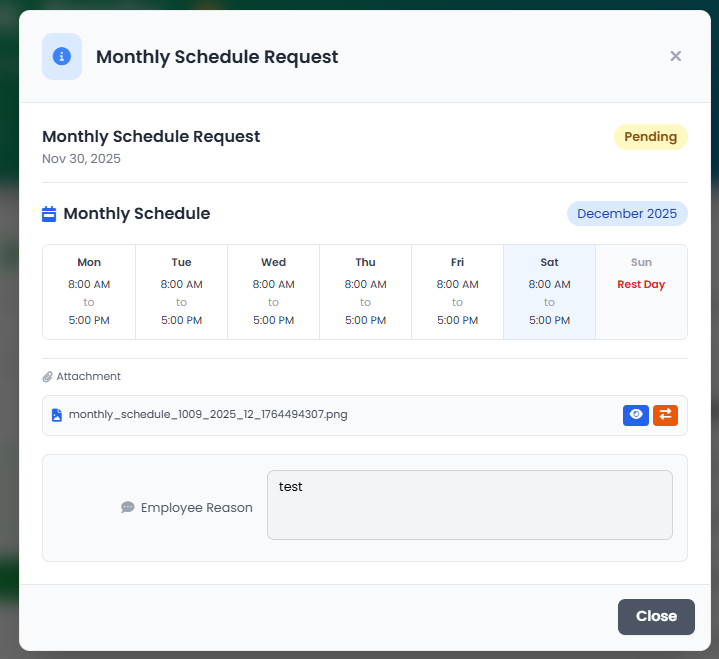

Welcome to the Recent Activities Dashboard - your one-stop control center for all pending requests in Harley. Think of it as your personal command center where you can see everything you've submitted that's waiting for approval. Instead of hunting through different pages to find your requests, everything is now in one convenient location. You can view summaries, make edits before approval comes through, cancel requests you no longer need, and even manage attachments - all from this single dashboard. This is a major improvement from the old system where requests were scattered across multiple pages.
✨ What's New
Request Summaries
See pending Leave, Schedule Change, Time Adjustment, and Overtime requests at a glance
Edit Requests
Modify pending requests before admin approval without canceling and re-submitting
Cancel Anytime
Instantly cancel pending requests directly from the activity summary
Attachments
View, download, upload, or delete attachments for each request
Request Types in Dashboard
📝 Leave Request Summary: Shows your leave request status, dates, type, reason, and any attachments. Click to view full details and edit if pending.
📅 Schedule Change Summary: Displays the schedule you're requesting to change to, the date range, reason, and current status. Edit individual fields like schedule, dates, or reason before approval.
⏰ Time Adjustment Summary: Shows your requested time in/out, current times, duration, reason, and status. Make quick time adjustments without resubmitting.
💼 Overtime Summary: View your OT hours, type (NDOT/RDOT), date, reason, and approval status. Edit duration and reason if still pending.
How to Use Recent Activities
1
Navigate to Dashboard
Go to your employee dashboard. Recent Activities will be prominently displayed on the home page.
2
View Request Summary
Click on any request card to see the full details in a modal dialog. All information is organized by request type.
3
Edit or Modify (Pending Only)
If your request is still pending, click "Edit Form" to modify specific fields. Changes are saved immediately.
4
Cancel or Manage Attachments
Use the "Cancel" button to withdraw your request, or upload/delete attachments as needed.

Recent Activities showing request summaries with edit and cancel options
.png)